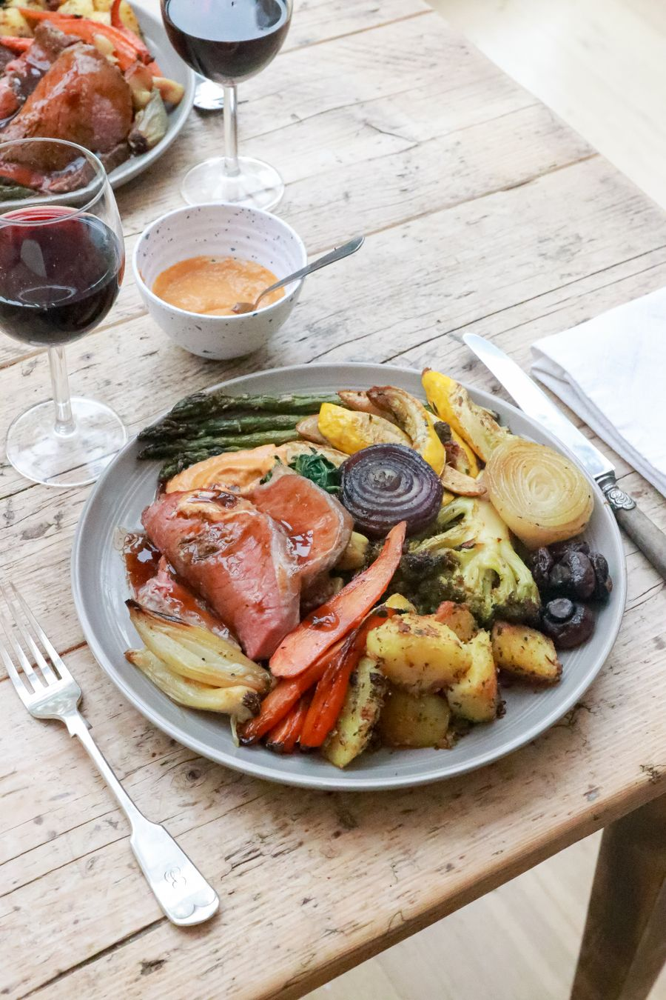
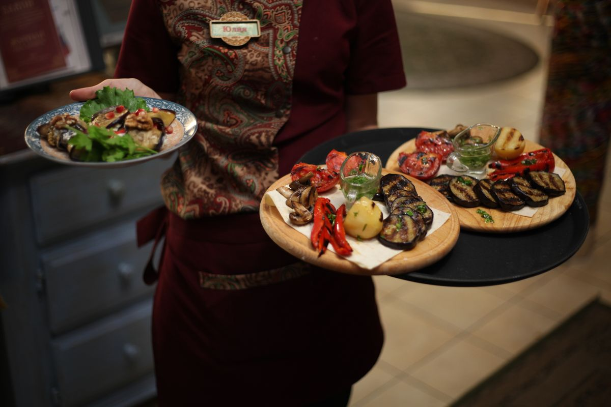

ランチ
季節野菜のプレート
焼き野菜と季節のスープ。パンと小さなデザートがつきます。
1,650円

木のテーブルとやわらかな灯りの店内。ひとりのランチにも、ゆっくり話したい夜にも。
カウンターとテーブル席。おひとりでも入りやすい配置です。
アレルギーや苦手な食材がある場合は、ご予約前にご相談ください。
大宮駅東口から徒歩圏内のお店を想定したサンプルです。
ランチ・ディナーとも予約を受け付ける想定です。
仕入れによって内容や付け合わせが変わる設定です。